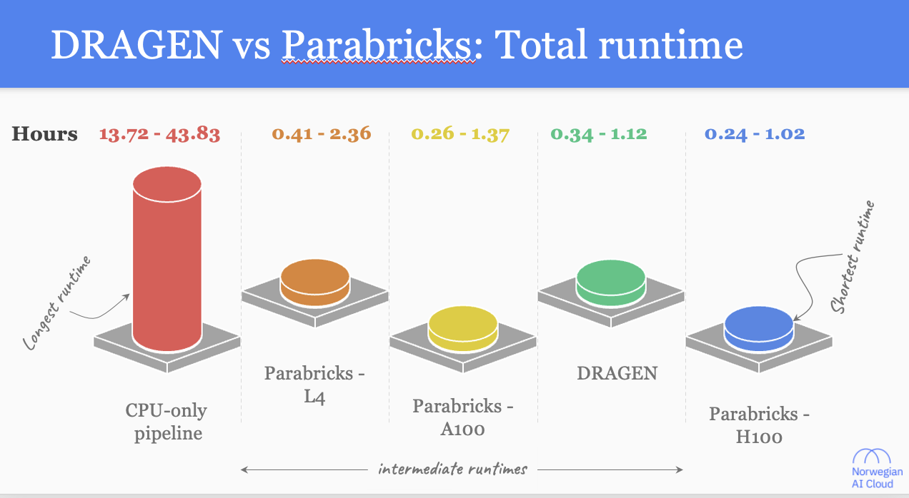

Benchmarking accelerated next-generation sequencing analysis pipelines
Our Accelerated NGS analysis benchmark paper

Hardware Platforms for NGS analysis
Hardware accelerated platforms

Significant performance gain can be achieved with any accelerated platform
Runtime comparison

Above is a cartoon figure to highlight the patters the original paper contains correct figures
Speedup ## Quantify performance improvements (Speedup = CPU-only runtime ÷ Accelerated runtime)
Variant calling showed higher speedup than Mapping
Speedup comparison
 Above is a cartoon figure to highlight the patters the original paper contains correct figures
Above is a cartoon figure to highlight the patters the original paper contains correct figures
Parabricks resource usage provided new insights
Profiling Parabricks

Above is a cartoon figure to highlight the patters the original paper contains correct figures
Optimizing Parabricks for further performance gains
Solution

Above is a cartoon figure to highlight the patters the original paper contains correct figures
Parabricks and DRAGEN, speedup and cost consideration
Practical Selection Framework

Above is a cartoon figure to highlight the patters the original paper contains correct figures
Accelerated NGS analysis NextFlow pipeline